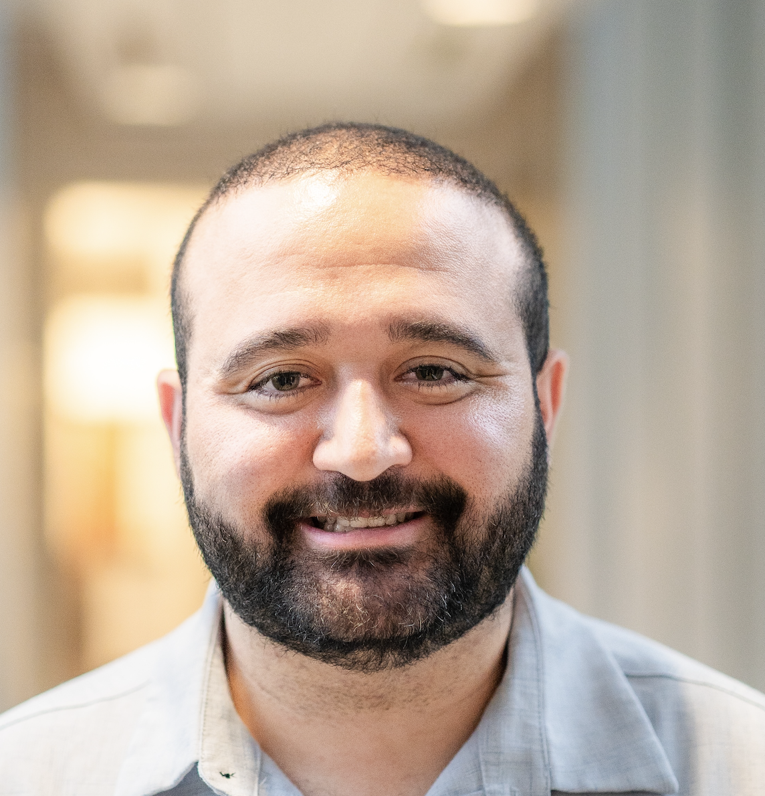
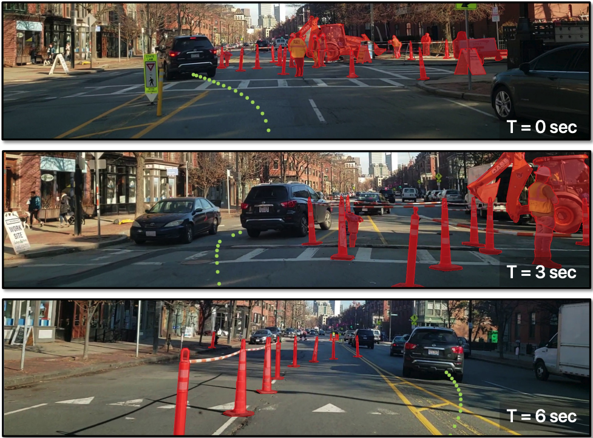
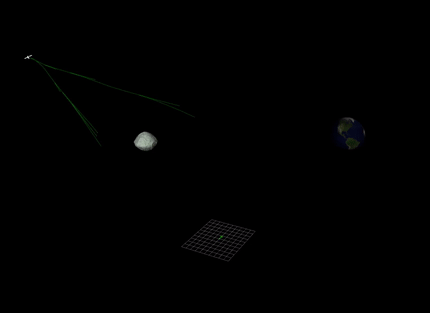
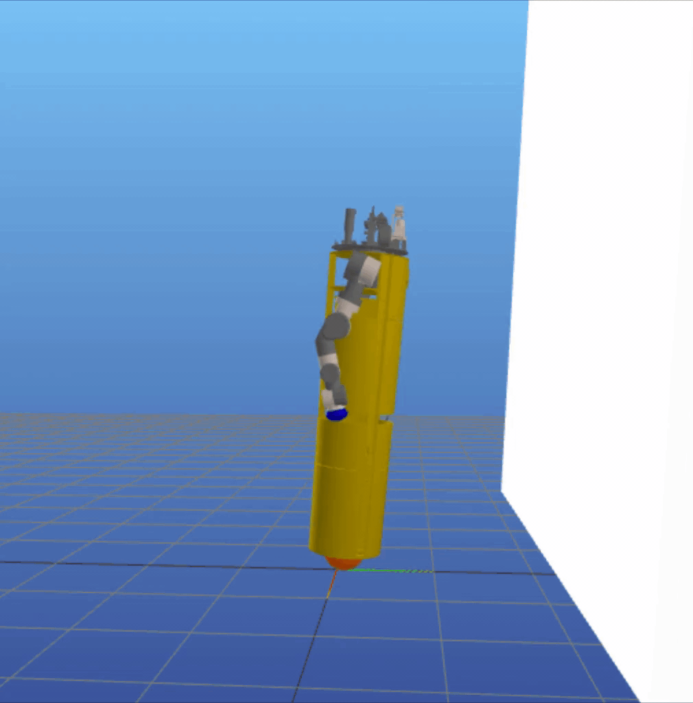

|
 |
I am a third-year PhD student at the Electrical and Computer Engineering Department at Carnegie Mellon University, where I am advised by John Dolan and Zachary Manchester and work with my talented labmates at DRIVELab and RexLab. I am interested in developing control algorithms that enable robots to adapt to their environment and navigate towards their destinations. Therefore, I employ techniques at the intersection of trajectory optimization, control systems, and machine learning. Prior to joining CMU, I held various positions in the industry, ranging from Artificial Intelligence Engineer at Robert Bosch to Data Scientist and CTO at GestaLabs Industry 4.0 Studio. Since 2021, I have been an Associate Professor at the Cyber-human Integration Technologies Division at Universidad de Guadalajara, currently on leave of absence for my doctoral studies. In addition to my research, I also serve as a NVIDIA Deep Learning Institute Certified Instructor and am a member of the NVIDIA University Ambassador Program, where I deliver workshops for free to academics and students of Latin America in Spanish to promote the learning of Robotics and Artificial Intelligence. |
{kind=link}
Education |
|
Carnegie Mellon University PhD, Electrical and Computer Engineering Department Driverless Intelligent Lab and Robotics Exploration Lab 2022 ─ Present |
|

|
University of Durham MSc (Research), Engineering Department Durham Energy Institute 2016 ─ 2018 |
|
Universidad de Guadalajara BSc, Electronics Department Laboratorio de Robots Moviles 2011 ─ 2015 |
Research |

|
Real-Time Whole-Body Control of Legged Robots with Model-Predictive Path Integral Control
Juan Alvarez-Padilla, John Z. Zhang, Sofia Kwok, John M. Dolan, and Zachary Manchester In Submission, arXiv 2024 Presenting a system for enabling real- time synthesis of whole-body locomotion and manipulation policies for real-world legged robots by leveraging the efficient parallelization capabilities of the MuJoCo simulator to achieve fast sampling over the robot state and action trajectories. |
|
 |
ROADWork Dataset: Learning to Recognize, Observe, Analyze and Drive Through Work Zones
Anurag Ghosh, Robert Tamburo, Shen Zheng, Juan Alvarez-Padilla, Hailiang Zhu, Michael Cardei, Nicholas Dunn, Christoph Mertz, and Srinivasa G. Narasimhan In Submission, arXiv 2024 Proposing the ROADWork dataset to learn how to recognize, observe and analyze and drive through work zones. |
Course projects |
|
 |
On-Orbit Optimal Kinodynamic Planning for Low-Thrust Trjactory Maneuvers
Ibrahima Sory Sow, Juan Alvarez-Padilla, Fausto Vega, and Nayana Survana 16-782: Planning and Decision-making for Robotics, Fall 2023, Professor Maxim Likhachev Using RRT* with an LQR-based heuristic to efficiently design low-thrust spacecraft trajectories, addressing nonlinear dynamics and long-duration maneuvers. |
|
 |
Whole-body Trajectory Optimization and Tracking for Agile Maneuvers for a Single-Spherical-Wheeled Balancing Mobile Manipulator
Juan Alvarez-Padilla, Christian Berger, Sayan Mondal, Haoru Xue, and Zhikai Zhang 16-745: Optimal Control and Reinforcement Learning, Spring 2023, Professor Zachary Manchester Optimizing and tracking whole-body trajectories for a ballbot equipped with arms. By using direct collocation and Time-Variant Linear Quadratic Regulators (TVLQR), the ballbot performs dynamic tasks such as navigating complex paths and pushing off walls, maintaining balance despite changes in its center of mass. |
|
This website is based on source code. |